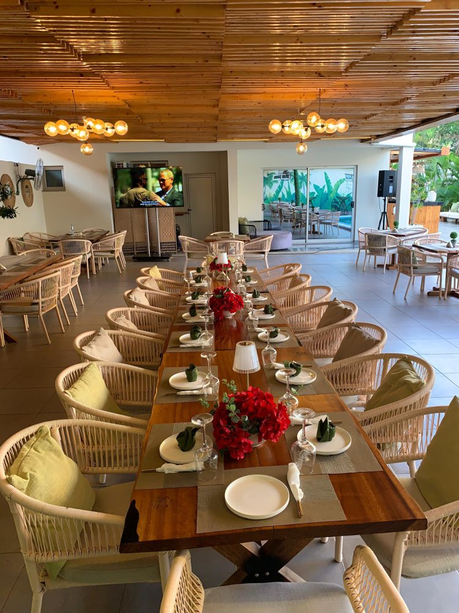

Bem-vindo(a) ao La Femme Sabores
Indique o seu número de telefone para aceder ao nosso menu digital.
O seu número é usado apenas para lhe apresentarmos o menu e eventuais novidades do La Femme Sabores.
Indique o seu número de telefone para aceder ao nosso menu digital.
O seu número é usado apenas para lhe apresentarmos o menu e eventuais novidades do La Femme Sabores.

“Sabor autêntico. Momento inesquecível.”
Não encontrámos nenhum prato ou bebida com esse termo.
💬 Reservar mesa